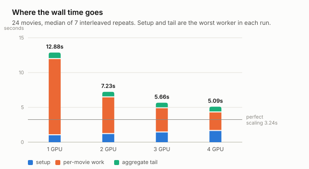
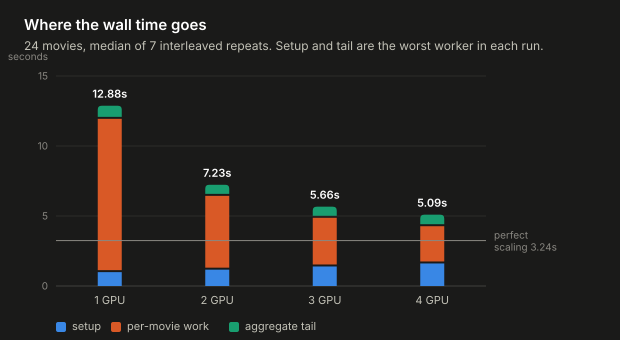
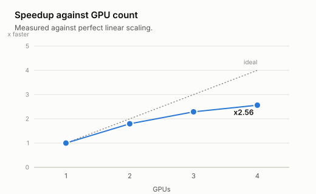
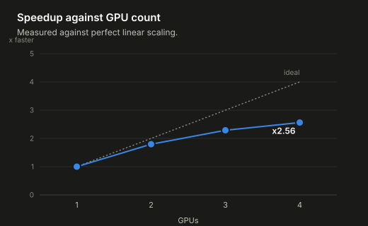
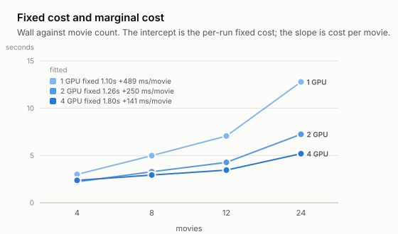
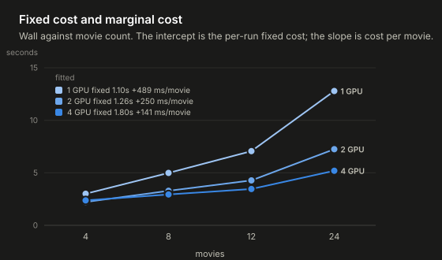
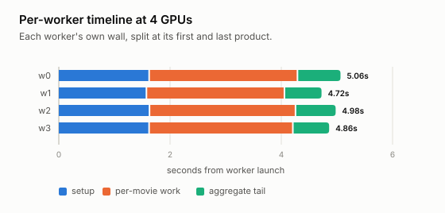
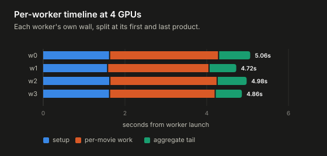

| GPUs | wall s | speedup | eff. | setup s | produce s | tail s | spread s |
|---|---|---|---|---|---|---|---|
| 1 | 12.98 | 1.00 | 100% | 0.99 | 10.95 | 0.94 | 0.000 |
| 2 | 7.23 | 1.80 | 90% | 1.17 | 5.27 | 0.79 | 0.035 |
| 3 | 5.67 | 2.29 | 76% | 1.39 | 3.48 | 0.79 | 0.029 |
| 4 | 5.06 | 2.56 | 64% | 1.61 | 2.66 | 0.82 | 0.068 |